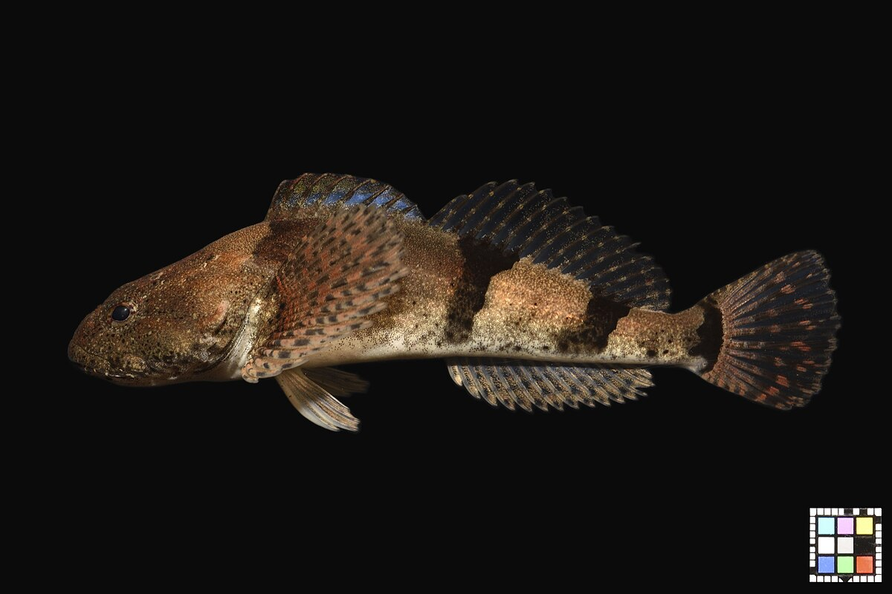

褐色に変色したアユカケ。 体色は同じ個体でも背景によって変化しやすい。 宮崎県。</a> © 2020 by <a href="https://commons.wikimedia.org/wiki/User:Ffish.asia">Ffish.asia</a> is licensed under <a href="https://creativecommons.org/licenses/by/4.0/">CC BY 4.0</a>></p>
